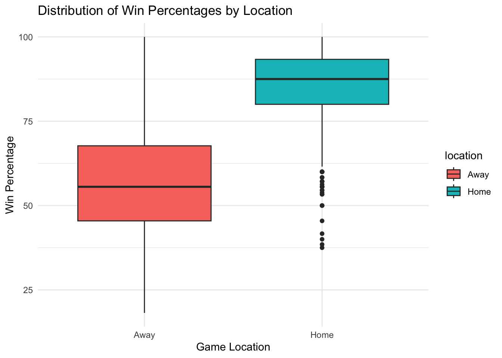

library(tidyverse)
# Original Data
home_data <- read.csv("Barttorvik Home.csv")
away_data <- read.csv("Barttorvik Away.csv")NCAA Homecourt Advantage
Analyzing NCAA Home-Court Advantage
Analysis Plan:
To test whether home-court advantage has a measurable effect on win percentages, we’ll calculate the observed difference in median win percentage between home and away games across all NCAA men’s basketball teams in our dataset. To determine if this observed difference could happen by chance, we’ll use a permutation test. Specifically, we’ll shuffle the “home” and “away” labels for each team multiple times and calculate the median difference in win percentages after each shuffle. By comparing our observed difference to this distribution of permuted differences, we can assess whether any observed effect is statistically significant.
The result will show whether the median win percentage difference between home and away games is greater than what we’d expect by random chance alone. A low p-value would suggest that the difference is meaningful and likely due to a true home-court advantage.
Data Source:
The data used in this analysis comes from a Kaggle dataset by Nishaan Amin, titled March Madness Data, which includes statistics on NCAA men’s basketball tournament teams from 2008 to 2024 (excluding 2020, as the tournament was canceled due to COVID-19). Specifically, we used two files: Barttorvik Home.csv and Barttorvik Away.csv, which provide team statistics for home and away games. These files were sourced from Barttorvik’s college basketball data. The full dataset is available on Kaggle: Home file and Away file.
Below is the original data:
I loaded the data files, which provided team names and their respective winning percentages (WIN.) for home and away games. The data required some cleaning and restructuring to make it suitable for analysis.
Visualizing the Original Data
Before diving into the analysis, it’s important to understand how win percentages differ between home and away games. To do this, I created a boxplot that compares the distributions of win percentages for home and away games. The boxplot provides a summary of the data by showing the median, interquartile range (IQR), and potential outliers for each location.
By visualizing the data in this way, we can see how performance at home differs from performance away, highlighting trends in win percentage distributions and helping to establish a foundation for further analysis. Below is the resulting boxplot.
# Boxplot comparing home and away win percentages
combined_data <- bind_rows(
home_data |>
mutate(location = "Home"),
away_data |>
mutate(location = "Away")
)
ggplot(combined_data, aes(x = location, y = WIN., fill = location)) +
geom_boxplot() +
labs(
title = "Distribution of Win Percentages by Location",
x = "Game Location",
y = "Win Percentage"
) +
theme_minimal()
We can see that the boxplot shows that teams tend to perform better at home than away, as indicated by the higher median win percentage for home games. The distribution of home win percentages is also wider, with more variability compared to away games, which tend to cluster around lower values. This suggests a significant home-court advantage in NCAA basketball games.
To further explore this trend and prepare for a more detailed analysis, I needed to clean and organize the data. By calculating summary statistics and structuring the data appropriately, I ensured it was ready for robust hypothesis testing and visualization. Below are the steps I took to wrangle the data.
Date Wrangling
Here, I selected the relevant columns, renamed them for clarity, and added a column to indicate whether the data corresponded to home or away games. I also grouped the data by team and location to calculate the median win percentage for each group.
#Reload original data to avoid values getting changed
home_data <- read.csv("Barttorvik Home.csv")
away_data <- read.csv("Barttorvik Away.csv")
# Select relevant columns and rename for clarity
# Add a "location" column to distinguish between home and away games
home_data <- home_data |>
select(TEAM, WIN.) |>
rename(win_pct = WIN.) |>
mutate(location = "home")
away_data <- away_data |>
select(TEAM, WIN.) |>
rename(win_pct = WIN.) |>
mutate(location = "away")
#Group by TEAM and Location, Calculate Median Win Percentage
home_median <- home_data |>
group_by(TEAM, location) |>
summarise(median_win_pct = median(win_pct, na.rm = TRUE))
away_median <- away_data |>
group_by(TEAM, location) |>
summarise(median_win_pct = median(win_pct, na.rm = TRUE))
# Combine Home and Away Results
combined_median_data <- bind_rows(home_median, away_median)Here is a quick summary of the results found above, sorted by location.
# Calculate the median win percentages for home and away
location_medians <- combined_median_data |>
group_by(location) |>
summarise(median_win_pct = median(median_win_pct, na.rm = TRUE))
# Print the results
location_medians# A tibble: 2 × 2
location median_win_pct
<chr> <dbl>
1 away 54.5
2 home 85.7Next, we can calculate the observed difference in median win percentage. This will show us the perceved advantage of playing at home compared to playing away.
#Calculate the Observed Difference in Median Win Percentage
observed_diff <- combined_median_data |>
group_by(location) |>
summarise(median_win_pct = median(median_win_pct, na.rm = TRUE)) |>
summarise(diff = diff(median_win_pct)) |>
pull(diff)
cat("Observed Difference in Median Win Percentage (Home - Away):", observed_diff, "\n")Observed Difference in Median Win Percentage (Home - Away): 31.16884 From here we get a value of around 31%. This means that for NCAA mens basketball from 2008-2024 there was 31% more wins when playing at home compared to away.
In order to see if this result is statistically significant I chose to perform a hypothesis test using a permutation function. Using 10000 random samples I shuffled the location of each team in order to make the win percentage uncorrelated with location. We then can compare our original observed difference of 31% to the distribution of randomized outcomes. This will return a two sided P-value.
# Define Permutation Function (Shuffling location within each team)
calculate_permutation <- function(data) {
data |>
group_by(TEAM) |>
mutate(location = sample(location, replace = FALSE)) |>
group_by(location) |>
summarise(median_win_pct = median(median_win_pct, na.rm = TRUE)) |>
summarise(diff = diff(median_win_pct)) |>
pull(diff)
}
#Permutation Test
num_permutations <- 10000
perm_results <- map_dbl(1:num_permutations, ~ calculate_permutation(combined_median_data))
# Calculate the two-sided p-value
p_value <- mean(abs(perm_results) >= abs(observed_diff))
cat("Two-Sided P-value:", p_value, "\n")Two-Sided P-value: 0 A P-value of 0 implies that it is statistically impossible for the observed difference to have occurred by chance. Or in other words, in the 10000 samples that we conducted none of the observed differences were greater than 31%.
Finally, I used a histogram to visulize the permuted distribution and compared it to the observed difference.
# Histogram of Permuted Differences with the Observed Difference
ggplot(data.frame(perm_results), aes(x = perm_results)) +
geom_histogram(bins = 30, color = "black", fill = "skyblue") +
geom_vline(xintercept = observed_diff, color = "red", linetype = "dashed", linewidth = 1.2) +
labs(
title = "Permutation Test: Distribution of Permuted Differences",
x = "Difference in Median Win Percentage (Home - Away)",
y = "Frequency"
)![Histogram displaying the distribution of permuted differences in median win percentages (Home - Away) for NCAA basketball teams. The x-axis shows the difference in win percentages, while the y-axis represents the frequency of these differences across 10,000 permutations. The red dashed line marks the observed difference of approximately 31%, which lies far to the right of the distribution, indicating that the observed difference is highly unlikely under the null hypothesis of no true difference between home and away win percentages.](MiniProject3_files/figure-html/unnamed-chunk-7-1.png)
Explanation of Plot:
The histogram shows the distribution of permuted differences in median win percentages between home and away games, simulating what we’d expect to see under the null hypothesis (no real difference between home and away performance). Each bar represents the frequency of permuted differences from our 1,000 random shuffles of the home and away labels. The red dashed line on the far right marks the observed difference in median win percentage, which is approximately 31.17%.
Summary of Findings:
The observed difference in median win percentages between home and away games is 31.17%, indicating that teams tend to perform better at home by a substantial margin. The two-sided p-value of 0 confirms that this observed difference is highly statistically significant. None of the permuted differences reached or exceeded the observed value, strongly suggesting that the observed home-court advantage is not due to random variation.
This analysis provides strong evidence that playing at home has a positive and significant impact on NCAA teams’ win percentages. Factors such as crowd support, familiarity with the environment, and the absence of travel fatigue may contribute to this advantage. The findings show that home-court advantage is likely a real and influential factor in game outcomes.
Discussion: Generalizability of Results
This analysis highlights a significant home-court advantage in NCAA men’s basketball, with a 31% higher median win percentage for home games compared to away games. While this result is statistically significant within the scope of the dataset, it is important to consider its generalizability. The dataset spans 2008–2024 and includes a subset of NCAA teams. These findings probably could be extended to other NCAA teams under similar conditions but may not fully capture the variability across different leagues, sports, or time periods. Further research is needed to determine whether the magnitude of home-court advantage is consistent across other contexts.